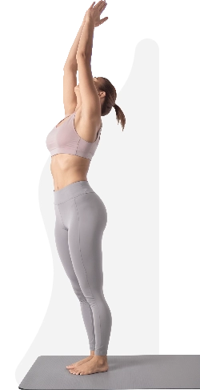

Отзывы и истории
Что говорят участники когда попробовали
- пользователи
- блогеры
- тренеры
-

Арина, 32 года, дизайнер (Москва)
"Тренировки хорошо разогревают тело, убирают скованность, дают подвижность. В общем хорошо подходят в качестве зарядки, разминки, коротких тренировок, особенно когда нужно с чего-то начать.
Многие коллеги стали говорить, что заметно подтянулся живот, сама замечаю, что помимо живота заметно подтягиваются, ягодицы и бедра. Хотя вес плюс-минус тот же.
Мне нравится, как меняется мое тело! Я занимаюсь 4 дня в неделю. И этого вполне хватает." -
Валентина, 41 год, косметолог (Воронеж)
"Для меня все упражнения несложные, за инструктором легко повторять. Во время тренировки мне хватает и времени, и нагрузки. Как раз то, что надо, чтобы не спугнуть саму себя.
Так как на работе чаще сижу и мало двигаюсь, то после занятий отмечаю легкость и мобильность.
Сейчас я уже на 20-ой тренировке и ни разу не пропустила. Мне каждый раз интересно, что будет в следующей." -
Светлана, 54 года, турагент (Краснодар)
"Достаточно быстро втянулась, хотя долго искала с чего начать.
Движения не однотипные, не успевают надоесть. Как-то все легко и просто. Давно искала именно такой формат тренировок.
Тренировки можно подстроить под свое расписание. Времени куда-то ходить заниматься особо нет. Делаю с утра либо в обед."
-
Поделись
своей историей -
Вдохнови
своим примером
Сотни женщин хотят начать именно сейчас, но стесняются или откладывают на потом.
-
Наталья, 29 лет, в декрете (Уфа)
"Весь день с ребенком, а от него сильно не побегаешь никуда. Практически нет никакого свободного времени.
Но я нашла решение: сделала себе утром зазор размером в 15 минут. Это изменило всё! Стала чувствовать себя свежее, живее, обновленной что ли.
Делаю тренировки между домашними делами. Нравится, что можно смотреть с телефона." -
Гульшат, 37 лет, врач-терапевт (Казань)
"Идеально для тех, кто весь день на работе. Придя домой, есть время выдохнуть, а потом позаниматься 15 минут. Это расслабляет и снимает напряжение, можно вернуть хорошее настроение.
Нравится, что не нужно думать — что делать дальше. Достаточно все компактно и информативно. Порекомендовала своим подругам." -
Нинель, 44 года, управляющая (СПб)
"Все по делу и без лишних разговоров. Начала делать эти упражнения месяц назад и я вижу заметные изменения.
После долгого перерыва в фитнесе сложно было начать заниматься. Для меня главное без спешки и на лайте." -
Алла, 25 лет, бариста (Санкт-Петербург)
"Именно здесь я открыла удовольствие от занятий. Я не заметила как прошла первые 10 тренировок и мне захотелось еще.
Несмотря на "плывучесть" моего учебного и рабочего дня, тренировки можно подстроить под удобное расписание.
Мне нравится что упражнения довольно простые и подходят для новичков. Я почувствовала себя более уверенной."
Популярные вопросы
-
Как часто нужно/можно заниматься?
Тренировки в чат-боте запланированы на каждый день. Но ты можешь двигаться в своем комфортном темпе — быстрее или медленнее, адаптируя нагрузку под свой уровень физической подготовки.
-
Нужен ли спортивный инвентарь?
Нет. Для удобства рекомендуем использовать коврик для фитнеса. В нескольких тренировках тебе понадобится обычное полотенце, стул и стена.
-
Что делать, если пропустил тренировку?
Ничего страшного. Все тренировки остаются у тебя в чат-боте Telergam и ты всегда можешь к ним вернуться (если ты их самостоятельно не удалишь).
Можно воспользоваться поиском в чат-боте, проскролить вверх в начало чата или до пропущенной тренировки, либо перейти по хештегам категории тренировки. -
Как работает доступ к тренировкам?
У программы одна единая стоимость. После совершения оплаты в чат-боте Telegram, ты получаешь доступ ко всем материалам.
Весь контент (видео, посты, статистика) сохраняется в твоем чат-боте Telegram. Ты сможешь в любой момент вернуться к любой тренировке или информации, при условии, что не удалишь их самостоятельно.
Не нужно никуда переходить, регистрироваться или продлевать подписку. Все входит в одну стоимость и весь контент остается у тебя.
упражнений
тренировок
групп мышц